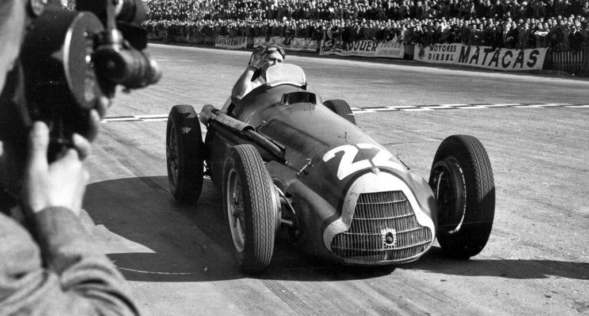
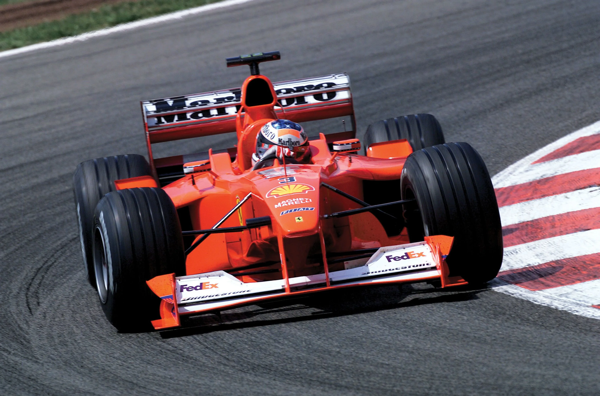
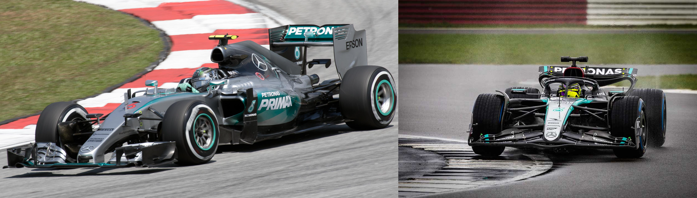

Les débuts (1950-1960)
La F1 des débuts était dominée par des écuries comme Alfa Romeo, Ferrari, et Mercedes-Benz. Des pilotes emblématiques comme Juan Manuel Fangio et Alberto Ascari ont marqué cette période.
L'évolution technologique (1970-1980)

Cette décennie a vu l'introduction de nouvelles technologies comme les ailes aérodynamiques et les turbos. Les écuries comme McLaren et Williams se sont distinguées, tandis que des pilotes comme Niki Lauda et Ayrton Senna sont devenus des légendes.
L'ère moderne (1990-2000)
Le développement technologique a atteint un niveau sans précédent. Michael Schumacher a dominé les années 2000 avec Ferrari, remportant 7 titres mondiaux.
L'ère hybride (2014 à aujourd'hui)
Depuis 2014, la F1 est entrée dans l'ère des moteurs hybrides. Mercedes a dominé cette période avec des pilotes comme Lewis Hamilton, qui a égalé le record de Schumacher avec 7 championnats du monde.